Essential Tools for Programmers
What artifacts do hack/geek style coders have?
1 hardware
1 notebook
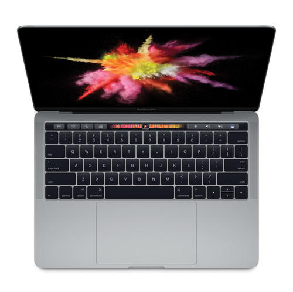
The first choice is MacBook Pro. It has a smooth system (even the beggar version i5+8g is enough), is similar to Linux, no need to shut down and close it, easy to use touchpad, convenient gesture operation, excellent screen, light size and weight, all-metal texture, 10 hours of battery life, rich software, and shortcut keys that double efficiency, all make MacBook the favorite of programmers.
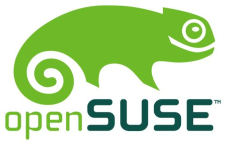
If you haven’t replaced your MacBook Pro yet, you need at least a dual-system laptop, windows + Linux. Opensuse is the first choice for Linux, which is beautiful and stable. Fedora and Ubuntu are also acceptable.
2 keyboard
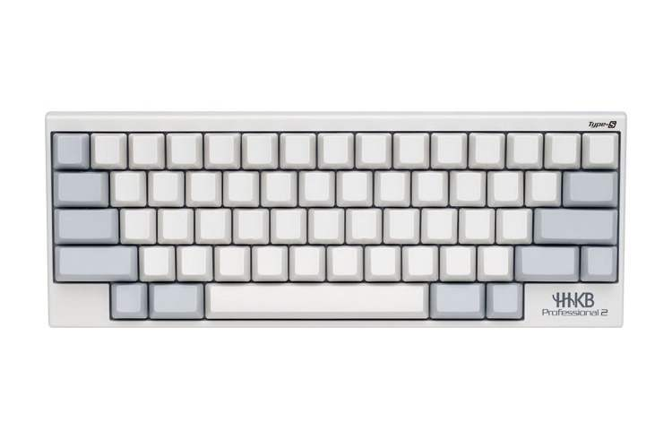
HHKB (Happing Hacking KeyBoard) is the first choice. The minimalist + optimized key layout, combined with various shortcut keys, brings an unparalleled efficient and comfortable input experience.
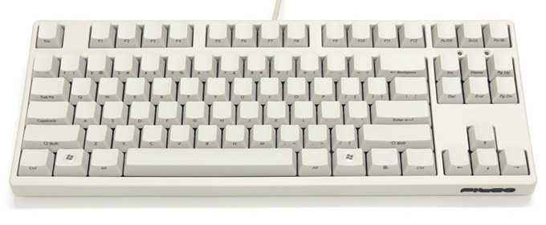
In addition, you also need to switch to a green-axis mechanical keyboard at any time, such as Filco, with 67/87/104 keys to choose from, replace the pbt unengraved keycaps, and enjoy a different kind of coding pleasure.
3 extended screen
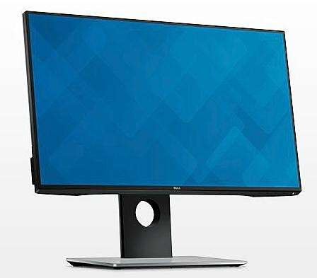
Dell screen is preferred, it can be raised, lowered and rotated.
Coders are often working in multi-threads. Although one screen can quickly switch between applications or desktops through shortcut keys, after all, it is not as efficient as multiple screens.
4 mouse
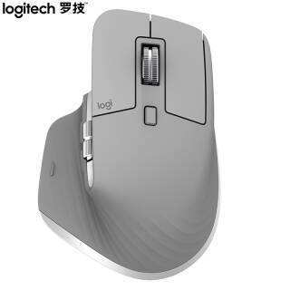
The first choice is Logitech MX series Master/Vertical/ERGO, full-size, vertical, touch ball, there is always one that suits you. The Master has a thumb wheel and multiple programmable keys, which can greatly improve efficiency. If you don’t want to replace it for the time being, the M720 will be enough.
Although a mouse is not necessary for programmers, most of the mouse operations of programmers can be achieved through keyboard shortcuts.
5 Lifting workbench + ergonomic chair
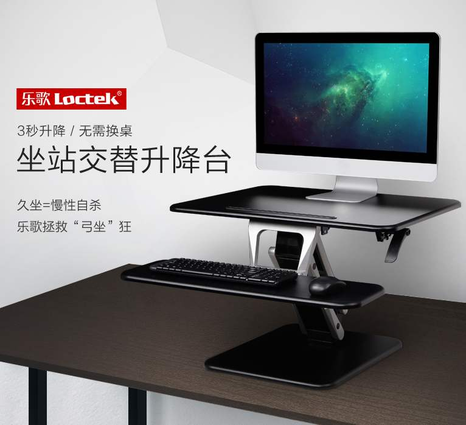
Sitting for long periods of time is a killer of health, and programmers should get rid of sitting for long periods of time.
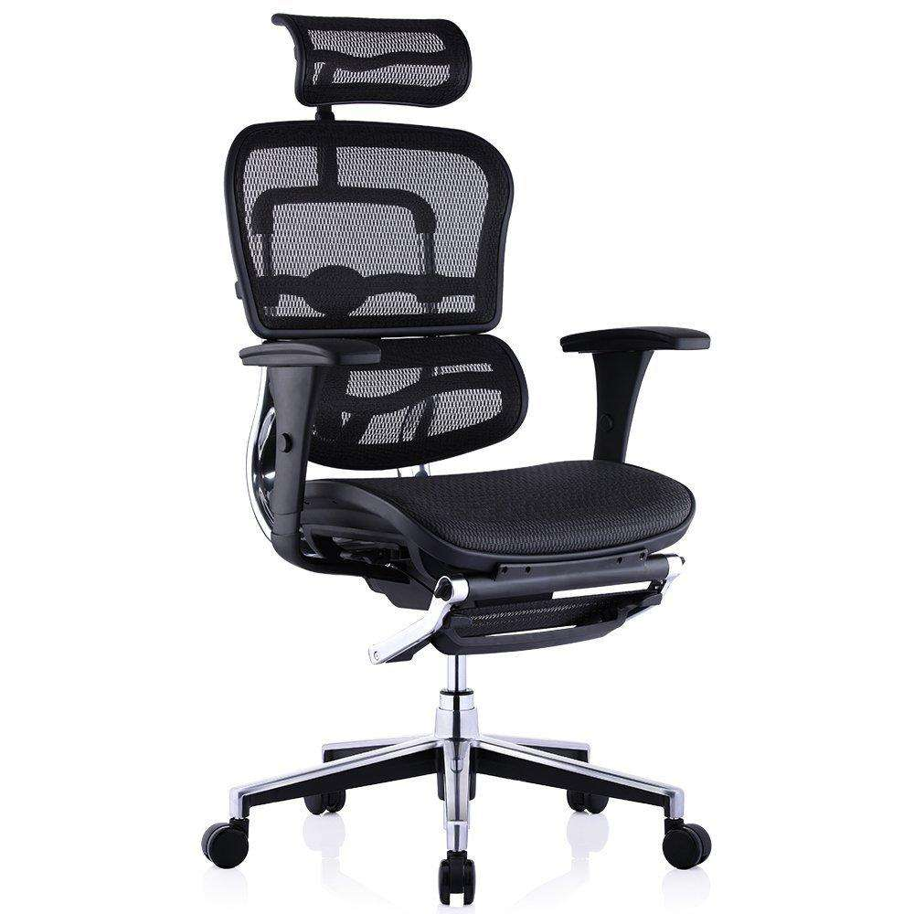
You may want a comfortable ergonomic chair to protect your health when sitting.
6 earplugs
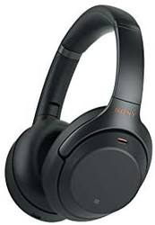
Sony/sennheiser is the first choice, either earplugs or large ears are suitable, which can isolate the interference from the external environment and enter the unmanned realm.
7 watches
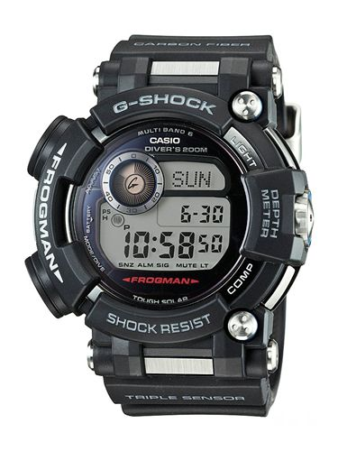
The first choice is the Casio G-Shock series of light kinetic energy + 6-station radio-controlled watches, which are less troublesome than quartz mechanical watches. They can be charged when there is sunlight and can also be set by radio waves. I recommend the Master series, such as Frogman, Big Mud King, etc.
Coders should also exercise regularly. At this time, a garmin is also essential to remind themselves of heart rate and exercise status.
8 e-books
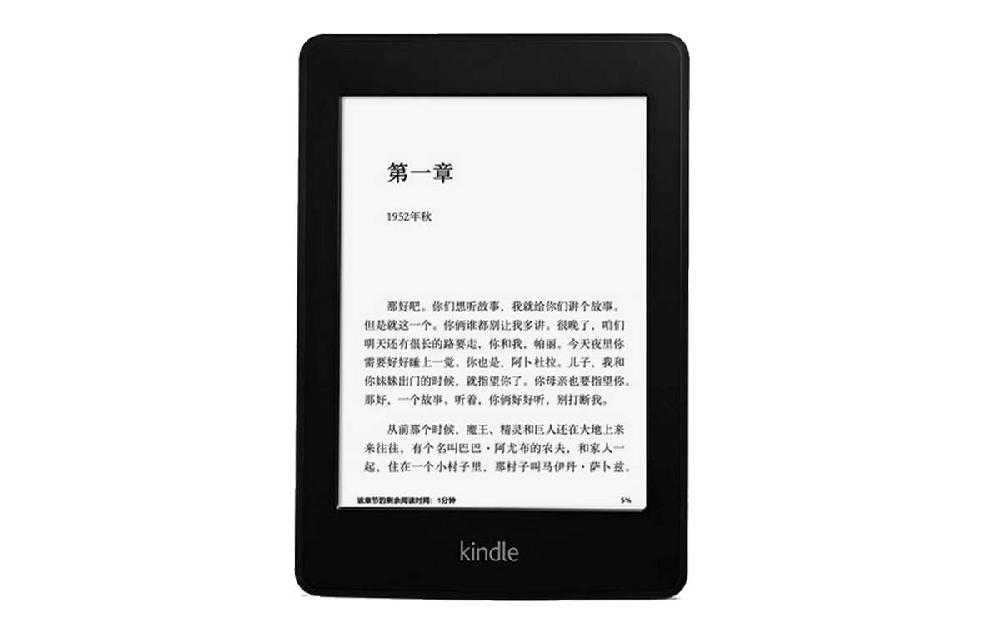
Kindle is the first choice. Of course, programmers cannot give up learning and treatment. Among many e-books, the Kindle system has an experience that is countless times better than that of various domestic Android systems. Except for the larger size, if you care about the size, you can consider an ink screen mobile phone. It is an e-book without inserting a mobile phone card.
2 software
1 The Three Musketeers
zsh
Zsh is a shell designed for interactive use, although it is also a powerful scripting language.
Official website:http://zsh.sourceforge.net/
tmux
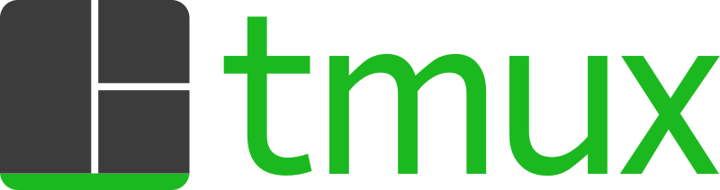
tmux is a terminal multiplexer. It lets you switch easily between several programs in one terminal, detach them (they keep running in the background) and reattach them to a different terminal.
Official website:https://github.com/tmux/tmux/wiki
vim
Vim is a highly configurable text editor built to make creating and changing any kind of text very efficient. It is included as "vi" with most UNIX systems and with Apple OS X.
Official website:https://www.vim.org/
Moving the mouse in vim input mode is not as convenient as emacs. The good news is that you can use emacs shortcut keys by modifying the binding.
2 emacs
You don’t need to use emacs directly, but you must know the emacs shortcut keys, because emacs shortcut keys are supported in many situations, such as Ctrl+f|b|a|e|n|p, etc.
Official website:https://www.gnu.org/software/emacs/
3 chrome plug-ins
Vimium is a Google Chrome extension which provides keyboard shortcuts for navigation and control in the spirit of the Vim editor.
Official website:http://vimium.github.io/
The vimium plug-in allows you to use chrome through the keyboard, improving efficiency several times.
If you use Safari, you can install the vimari extension. It is very convenient to install directly through the App Store, although the function is weaker.
Other plug-ins: ghelper/OneTab/Tampermonkey, etc.
4 IntelliJ/pyCharm/Atom/VSCode
Being proficient in an IDE or editor is also a must for coders.
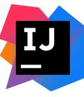
IntelliJ is the first choice of many developers. By installing the IdeaVim plug-in, you can also use vim to write code.
Official website:https://www.jetbrains.com/idea/

vscode is a conscientious product produced by Microsoft and also supports vim plug-ins.Free. Built on open source. Runs everywhere.
Official website:https://code.visualstudio.com/
5 Linux commands
Awk, sed, xargs, sort, wc, uniq, grep, tail, head, ps, ssh, history, tcpdump, lsof, netstat, top, countless commands can double your efficiency.
6 An easy-to-use terminal
Then superimpose the one-click calling terminal of each platform, such as kde's yakuake/gnome's tilda/mac's item2/windows' conemu, don't be too cool
7 useful desktops
mac desktop (spetacle), kde desktop (can be configured the same as mac desktop), i3wm desktop (simple), there is always one suitable for you
Remote desktop: freerdp, parallels client
8 Containers or virtual machines
Containers and virtual machines common to all platforms
docker
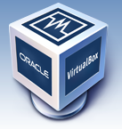
virtualbox
vagrant
pve
9 Become proficient in a language
Shell, python, java, scala..., being proficient in at least one language is also a must for coders.
10 Markdown
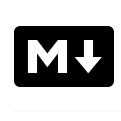
The first choice for coders to write documents and blogs, it is a lightweight markup language. Through simple markup syntax, ordinary text documents can have a certain format, and it can also be exported to HTML, PDF, word and other formats.
There are markdown plug-ins in every IDE or editor.
11 Git/GitHub/Gitlab
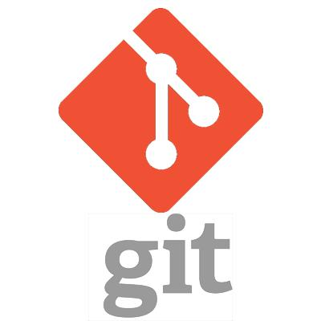
Version control, remote synchronization, work anytime.
official:
12 Leetcode
Let's brush up on the questions before coders study or change jobs.
Official website:https://leetcode-cn.com/
13 music software
spotify
NetEase Cloud Music.
14 shortcut keys in memory
No one is a coder without shortcut keys. Countless shortcut keys for various systems and applications are memorized in his mind. When using them, he can flow smoothly without getting too high.